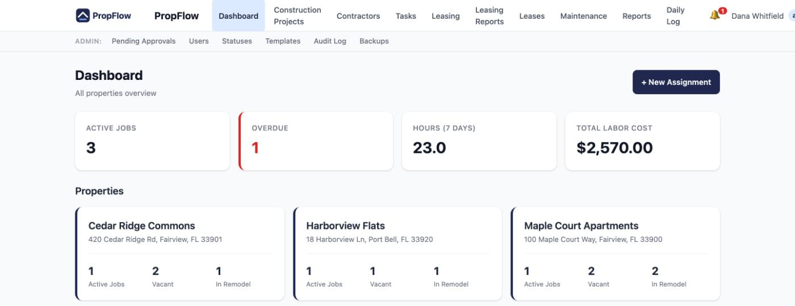

Lior Avram
AI and automation for operations-heavy businesses, built by someone who ran one.
Support inboxes answered by hand. Subcontractors tracked on paper. Receipts matched to jobs one line at a time. I lived those problems as an owner in construction and restoration. Now I build the AI systems and automations that take them off a team's plate.
Director of Digital Operations & AI (contract), Everest Realty · Fort Lauderdale, FL
Selected work
AI implementation
AI support system for an international wellness brand
Client project, customers in 40+ countries. Chosen over 2 other firms.
- 125K+ past support emails turned into a knowledge base
- 5 → 1 channels in, one HubSpot record per customer
- $0.32 → $0.015 AI cost per drafted reply
Read the case study
AI support system for an international wellness brand
Client project, customers in 40+ countries. Chosen over 2 other firms.
The problem
The brand sells in 40+ countries and was answering customers by hand across email, chat, SMS, WhatsApp and Instagram. The same questions came in every day, and the answers already existed, buried in 125K+ old support emails.
What I built
I distilled those 125K+ emails (5.4 GB) into about 1,950 curated question and answer pairs, the knowledge base Claude drafts from. n8n pulls every channel into a single HubSpot record. For support answers, Claude drafts the reply in the brand's voice and a team member reviews it before it goes out.
- A message arrives by email, chat, SMS, WhatsApp or Instagram
- n8n routes it to the customer's HubSpot record
- Claude drafts an answer from the 1,950-pair knowledge base
- A team member reviews, edits and sends
I also built the CRM side: 20+ custom HubSpot properties and a sales pipeline across a 2,000+ ticket environment, plus a Zoom link that tracks who registered versus who attended each event. Every new automation ran in shadow mode first, logging what it would have sent, before it was switched on.
Results
- One customer record across 5 channels instead of 5 separate inboxes
- AI cost per drafted reply cut from $0.32 to about $0.015 with prompt caching
- Event follow-ups go out by segment on their own: attendees, no-shows and upsell sequences
- Claude API
- RAG
- n8n
- HubSpot Enterprise
- WooCommerce
- Zoom
- Render
Automation
Receipt automation that gives back 10-15 hours a week
Everest Realty, property management and construction.
- 10-15 hrs of manual work removed every week
- 5 months of backlog cleared
- To the penny reports match the supplier's receipts
Read the case study
Receipt automation that gives back 10-15 hours a week
Everest Realty, property management and construction.
The problem
Every week someone logged into the Home Depot business portal, scrolled through purchase history, matched each line item to a job and built spreadsheets for the bookkeeper. It took 10-15 hours a week, and the work had fallen 5 months behind.
What I built
A scheduled Playwright system that pulls new orders, matches every line item to the right job with a three-tier matching algorithm, and builds PDF receipts plus an Excel report with subtotals. Microsoft Graph files everything to OneDrive by week, ready for the bookkeeper.
When Home Depot quietly changed its export format, one order came out at $7,030.32 instead of the real $2,193.80. Nothing crashed, which is the dangerous part. I traced it, rebuilt every affected report, checked them to the penny against Home Depot's own receipts, and added a reconciliation check that flags any order whose line items don't add up to the receipt total.
Results
- 10-15 hours of manual receipt work a week, gone
- 5-month backlog cleared
- Reports match the supplier's receipts to the penny, with an alarm if they ever drift
- Node.js
- Playwright
- Microsoft Graph
- ExcelJS
- PDF generation
- launchd
Internal tool
Subcontractor tracking app for a 900+ unit portfolio
Everest Realty. 3 Florida apartment properties, 15-20 active subcontractors.
- 3 properties on one live dashboard
- 15-20 subcontractors tracked by job
- 57 automated tests behind it
Read the case study
Subcontractor tracking app for a 900+ unit portfolio
Everest Realty. 3 Florida apartment properties, 15-20 active subcontractors.
The problem
Subcontractor work across three apartment properties was tracked on paper. Nobody had a live view of who was working where, how many hours had been logged, or which jobs were running late.
What I built
A full-stack web app, live on Render. Contractors sign in from their phone with a PIN to see their jobs and log daily work. Managers get one dashboard with active jobs, overdue work, hours and labor cost for each property, plus construction projects, tasks and leasing reports that export to Excel. Role-based permissions control who sees what, and automated OneDrive backups protect the data.

Results
- One live view across 3 properties in place of the paper system
- Labor hours and cost rolled up by job and property automatically
- 57 automated tests and automated backups, so it keeps working after handoff
- Node.js
- Express
- SQLite
- HTMX
- Microsoft Graph
- Twilio
- Render
How I work
Find where the hours go first
Before building anything I map the manual work: who does it, how often, and what it costs when it breaks. Then we pick the one fix worth building first.
Shadow mode before live
New automations log what they would have done before they touch a customer or a bookkeeper. The team checks the output and signs off before it goes live.
Built for the team to run
Tests, backups and alarms when the numbers drift, so the system keeps working after I hand it over.
About
I spent 7+ years running businesses before I built software for them. I founded Voge Emergency & Restoration and grew it to $1M+ a year, with 90+ projects and field crews of 5 to 15. Before that I ran the lending division at LS Financing: 550 active accounts, a $4M+ portfolio, $2M+ raised, and underwriting software built on 4 credit bureau APIs.
Today I'm Director of Digital Operations & AI (contract) at Everest Realty, the sole technology lead for a 900+ unit multifamily portfolio. I work with the C-suite, property managers and 15-20 subcontractors, and I take on AI implementation projects for other operations teams.
When I build for a construction or property team, I've usually done the job the software is replacing.
Tools I build with
- Claude API
- MCP
- RAG
- Prompt engineering
- n8n
- HubSpot
- Node.js
- Express
- Python
- Playwright
- SQLite
- HTMX
- React
- Firebase
- Microsoft Graph
- Twilio
- Render
- Netlify
Certifications and education
- Claude Code in Action (Anthropic)
- MCP Architecture (Anthropic)
- IICRC WRT
- Florida real estate license
- B.S. Finance, San Diego State
Industries
- Construction
- Restoration
- Property management
- Real estate
- Lending
Hiring for AI implementation, or have a process eating your team's week?
Send me the problem in a few lines. I'll tell you straight whether I'm the right fit and what I'd build first.